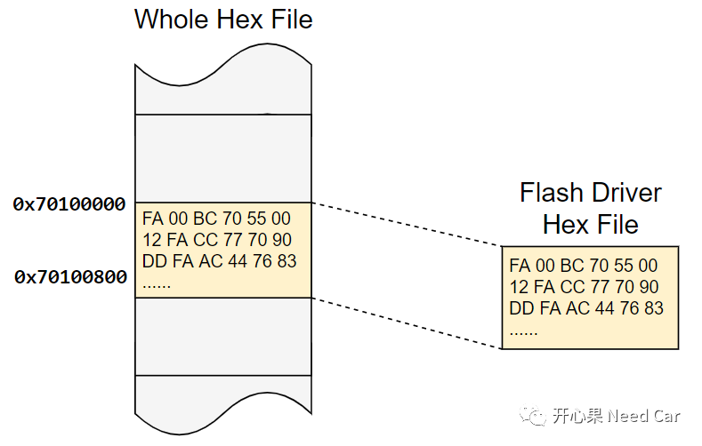
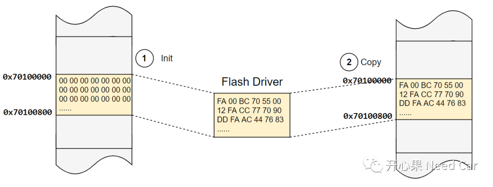
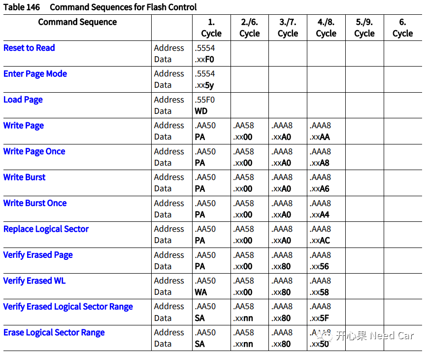
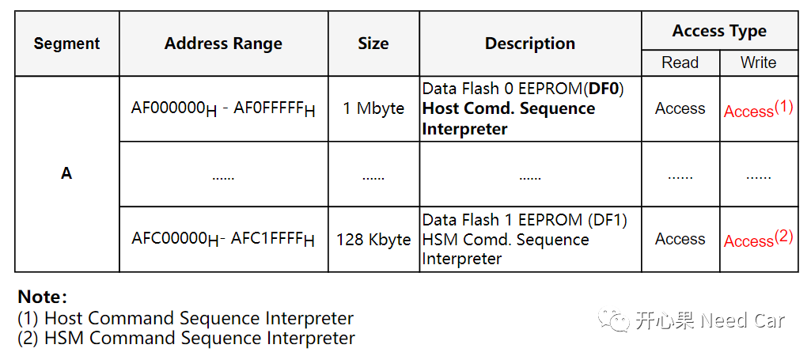
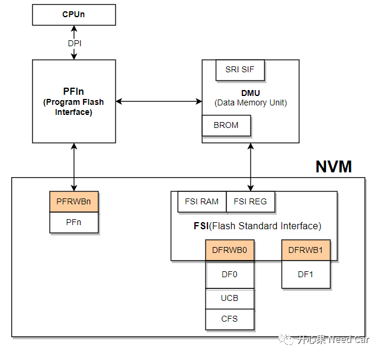

开心果 Need Car · 2022-09-27T18:55:00+08:00 · 微信原文
嵌入式开发中，会涉及大量的信息“存储”工作。不管是算法开发工程师，还是基础软件开发工程师，两者均需要考虑信息存储问题。关于“存储”，上层和下层关注的点不同。本文讨论如下几个话题：
1、为什么需要Flash Driver？
2、Flash Driver如何操作？
3、哪些模块涉及Flash Driver的操作？
我们先思考这样一个问题：“当车辆下线（EOL:End of Line）或者某个ECU的Application需要更新时，如何将Application程序更新到ECU内存中？”大家可能都会说：Bootloader。没错，确实需要依赖Bootloader更新ECU的Application程序，可是Bootloader更新Application程序又依赖什么呢？答：Flash Driver。
当然，Flash Driver的用武之地不仅于此。
工程中，常常会采用时时存储、事件存储以及下电存储策略，保存一些重要信息到DFlash中，eg：诊断的拓展数据（ExtendedData）和快照数据（Snapshot Data）；
标定工程师完成标定工作时，需要将标定好的数据存储到PFlash中；
信息安全中，eg：Public Key等安全常量信息需要存储到PFlash中；
...
如上，这些信息均需要存储，存储的位置一般选择PFlash或者DFlash。考虑项目成本，多数项目会选择DFlash模拟EEPROM（本文不讨论存储EEPROM的情况）。
不管选择PFlash存储还是DFlash存储，均需要依赖Flash Driver。因此，涉及“存储”时，Flash Driver扮演着至关重要的角色。
提示：对于英飞凌芯片，操作PFlash/DFlash的Flash Driver接口，可以共用一套，通过地址区分Flash类型。
对于Flash Driver的操作接口，芯片手册中，会提示：“Flash Driver不要存放在PFlash中。”为什么呢？我们试想这样一种场景：某外部环境干扰，程序异常跑飞，程序异常调用PFlash区中的Flash_erase()/Flash_write()接口，破坏原有的Code区，最终导致ECU不能正常工作。
所以，为了规避这样的风险，工程开发中要求：当程序（Application）需要升级时，将Flash Driver下载到RAM区，一般选择PSPR（Program Scratch-Pad SRAM）区。
实际的工程中，可以将Flash Driver直接映射到PSRAM区，eg:0x70100000~0x70100800，注意：在链接文件中定义好Flash Driver的段空间。之后在生成的工程Hex File中，将Flash Driver部分独立保存一个Hex File（或者其他二进制文件格式，eg:Bin文件），可以用HexViewer实现。Flash Driver Hex File截取，如下所示：


当Flash Driver需要将存储信息存储到指定位置时，底层又是如何实现的呢？我们先从Host命令序列解释聊起。
1、Host命令序列解释器


void IfxFlash_eraseMultipleSectors(uint32 sectorAddr, uint32 numSector){*(volatile uint32 *)(0xAF00AA50) = sectorAddr;*(volatile uint32 *)(0xAF00AA58) = numSector;*(volatile uint32 *)(0xAF00AAA8) = 0x80;*(volatile uint32 *)(0xAF00AAA8) = 0x50;__dsync();}
如上的接口，传参示例：sectorAddr = 0xA00E0000，numSector = 1。
2、Flash Driver操作中的注意事项

1、DEM模块
当车辆故障发生时，DEM需要将DTC产生的快照数据和拓展数据存储，且这些数据一般选择存储在DFlash中。
前面主要讨论Flash Driver操作PFlash的约束，即：需要将Flash Driver存放到RAM区。其实，不同PFlash Bank之间的擦/写操作，可以不将Flash Driver放到RAM区（不建议固化Flash Driver到PFlash）。比如：Public Key存储，一般需要将其存储到PFlash中，因此，Flash Driver和Public Key需要存放在不同的PFlash，以此实现Flash Driver操作PFlash。
对于DFlash的操作，Flash Driver有必要放到RAM区域吗？答：不需要。我个人理解是不需要的，下电存数据时（常说的NVM存储），在操作DFlash前，通过检查地址的合法性（是否是配置的DFlash区域）确保Flash Driver不要操作到非法地址空间即可。一般来说，项目使用DFlash模拟EEPROM，存储的是数据，不涉及Code，所以不必担心Code被擦除。
......
往期精彩回顾